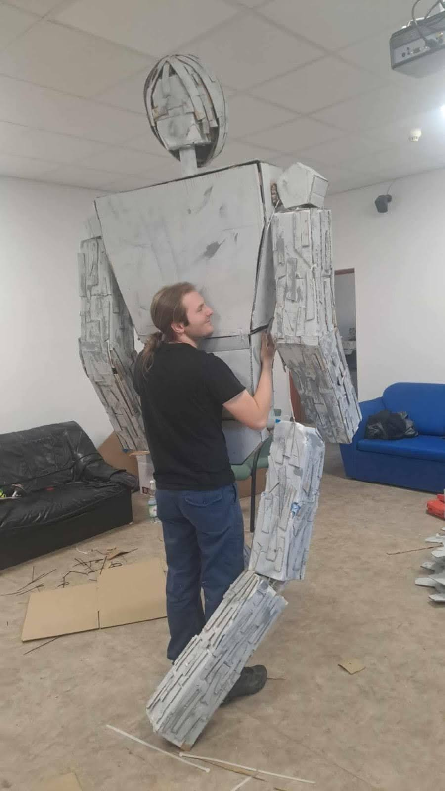
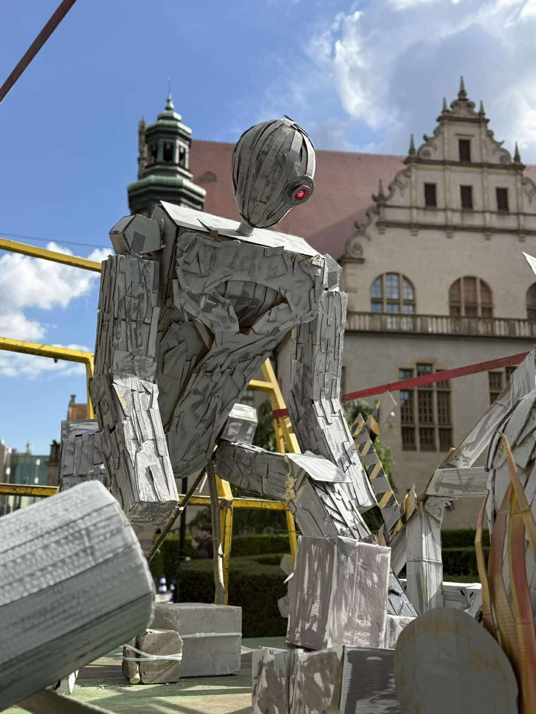

Pochód Juwenaliowy UPP 2025
Autor: Jan Szczepański
Członkowie Koła Naukowego Informatyków dołożyli swoją cegiełkę do zwycięskiej platformy Juwenaliowej UPP 2025. W tym roku naszym motywem był Terminator. Jako że tematyka AI i robotyki jest nam bliska, wyposażyliśmy jednego z terminatorów w mechanizm do poruszania głową, bazujący na platformie Arduino.
Oczywiście pomogliśmy również przy montażu i demontażu całej konstrukcji.